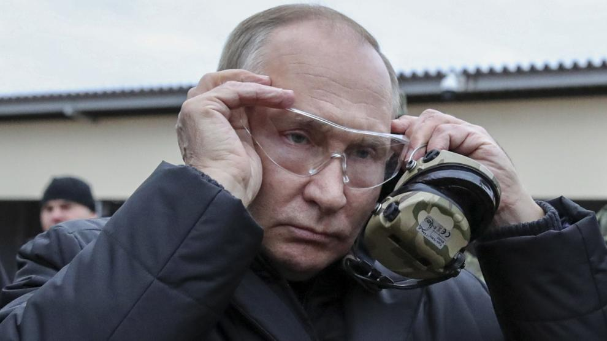

Occidente insiste en que no está en guerra con Rusia y que su único papel es el de apoyar a Ucrania, pero la tesis de Moscú es la contraria: considera que los aliados de Kiev se implican "directamente" en el conflicto tras confirmarse el envío de tanques a las tropas de Zelenski, que puede provocar una escalada en las hostilidades, sobre todo en primavera. "Moscú percibe lo que hace la Alianza Atlántica y los países occidentales como una participación directa en el conflicto en Ucrania", expresó el portavoz de la Presidencia rusa, Dmitri Peskov, en respuesta a las palabras del presidente estadounidense, Joe Biden, quien sostuvo que el envío de tanques a Kiev "no es un aviso a Rusia".
Al mismo tiempo, el presidente ucraniano Volodimir Zelenski fue todavía cauto sobre el rearme de los suyos y condicionó la eficacia de los tanques que le suministrarán los aliados a la cantidad que reciba y a la velocidad de entrega. "La clave ahora es la velocidad y el volumen. La velocidad de entrenamiento de nuestro ejército, la velocidad de suministro de tanques a Ucrania. El volumen de soporte del tanque", afirmó.
Además, Zelenski volvió a insistir en que la condición que pone Ucrania para negociar con Vladimir Putin es que Rusia retire "todas sus tropas" de su territorio. En este sentido, ha recalcado que las conversaciones "solo serán posibles si Rusia retira sus solados, admite su error y nombra un nuevo Gobierno", tal y como ha señalado durante una entrevista con Sky News. "Solo entonces sería posible", ha dicho antes de hacer hincapié en que reunirse con Putin "no tendría ningún sentido". "Para mí esto no es interesante, ni reunirnos ni hablar", ha sostenido. "Ellos no quieren hablar. Así era su postura incluso antes de la invasión. Es lo que Putin decidió", ha manifestado.
